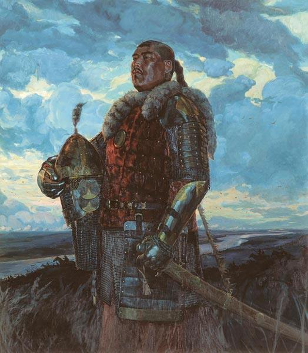

1376 год. В Англии и Швеции решают вопросы престолонаследия, в Италии и Византии, отринув северную чопорность и подойдя к разруливанию проблем с типично южным темпераментом, с огоньком режут друг друга, в Центральной Африке империи Канем настал окончательный кирдык, ацтеки и японцы занимаются собственными делами, непонятными белому человеку.
А на Руси тем временем соображают, что делать с уже изрядно задолбавшим всех Мамаем. Мамай – человек большого интеллекта и хитрости, но крайне сложной судьбы, поскольку верно сказано про хитрые жопы и корнеплоды с резьбовой нарезкой. В свое время этот гражданин очень удачно женился – аж на дочери самого хана Бердибека. Однако хану не свезло, наследников он не оставил и вообще умудрился глупо погибнуть. После чего, как и полагается в более–менее цивилизованных государствах, в Орде началось соревнование за право называться следующим ханом. Ситуация осложнялась тем, что, по традиции, подобный титул мог получить сугубо потомок Чингисхана, каковых, стараниями прошлых потомков (например, того же Бердибека), осталось не так уж много. Но и не так уж мало: претендентов хватило аж на 21 год радостных междоусобиц.

В те веселые времена Мамай четко осознал, что у него по генеалогическому древу Чингисхан не топтался, значит быть ханом ему не светит – других дурней с амбициями вокруг хватает. Поэтому он пошел другим путем и с упорством, достойным лучшего применения, начал делать ханами своих ставленников. Технология проста:
1. Ищешь мальчонку поуправляемей;
2. Проверяешь предков, находишь там Чингисхана;
3.?????
4. Profit!
Вот с третьим пунктом у Мамая получалось через раз, поэтому частенько приходилось давать по шее остальным ханам и тем, кто мечтал ими стать. За всю свою двадцатилетнюю карьеру в качестве хан–продюсера он умудрился повоевать аж с 9 другими разочарованными претендентами на престол.
Как уже было сказано в начале, задолбать этот антерпренер умудрился не только своих конкурентов, но и Русь. Посудите сами: в 1363 году Дмитрий (тогда еще не Донской, но скоро будет) получает право на великое княжение от Мамая.
Но не успел еще и отпраздновать как следует, не успел законов понаиздавать, денег скопить, виллу на Канарах отгрохать, как через 7 лет ярлык на княжение уходит злейшему конкуренту – Михаилу Тверскому. Дмитрий, естественно, не растерялся и уже через год вернул себе все права назад, но призадумался – а на кой эдакий Мамай нужен, который, во–первых, не хан, а во–вторых – настолько ветрен и непостоянен?
Три года подумав, в 1374 Дима решает послать к едрене фене всю эту узкоглазую ораву с их непонятными претензиями. Для лучшей доходчивости послания посол Орды в Нижнем Новгороде режется нафиг вместе со свитой. Мамай тем временем решает локальные вопросы у себя дома и по этому поводу ничего, кроме как матом покрыть, сделать не может, но зарубку в памяти напротив имени «Дмитрий» оставляет, обещая разобраться с наглецом позже.
В 1376 году доблестные войска Московского княжества, пользуясь затянувшимся бездействием Мамая, доходят до Волжской Булгарии (это в районе современного Татарстана), где и устанавливают над ней свое влияние, снова подвинув Золотую Орду в целом и Мамая в частности. Мамай звереет окончательно и понимает, что дальше тянуть уже нельзя – скоро до трусов разденут.
А тем временем далеко на юге молодой и амбициозный товарищ Тохтамыш, происходящий как раз из рода Чингисхана, бежит в Самарканд, обоснованно опасаясь за свою голову.
Но об этом, и к чему это привело – в следующей серии.